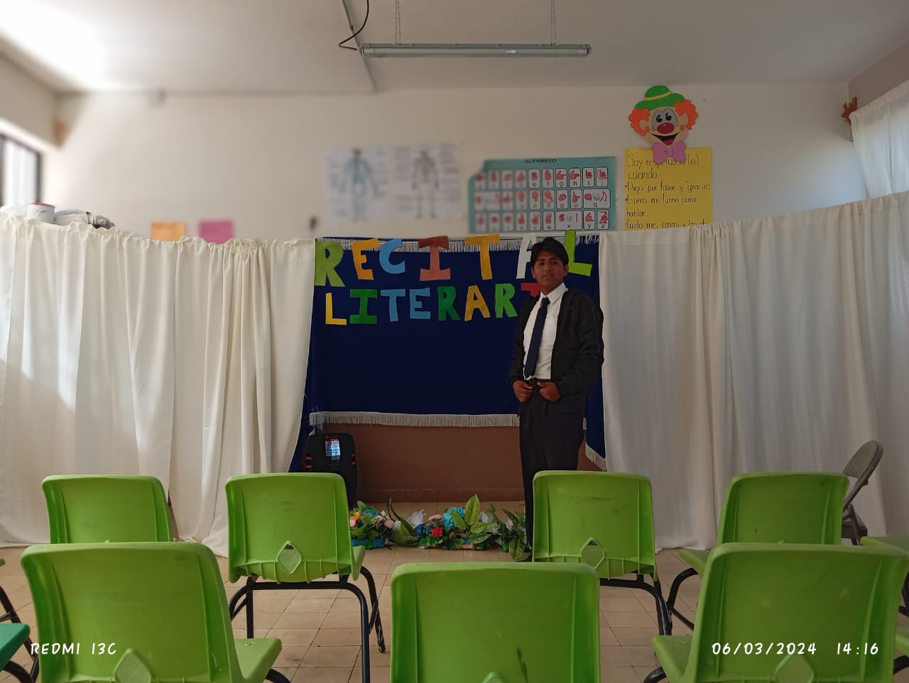
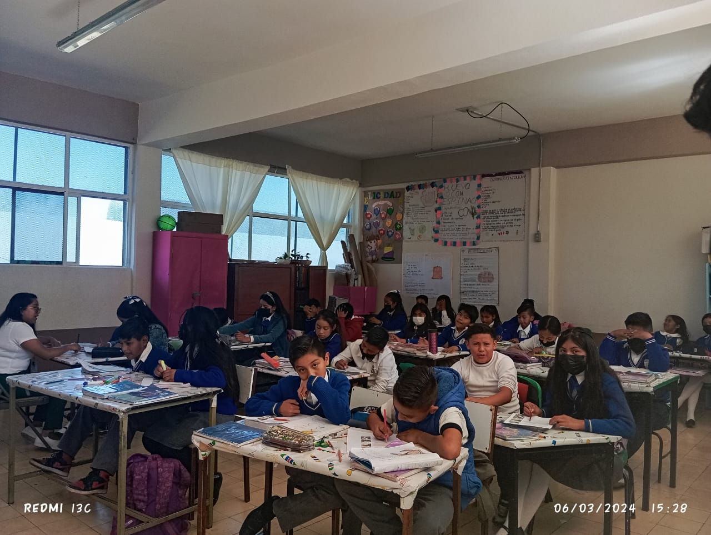
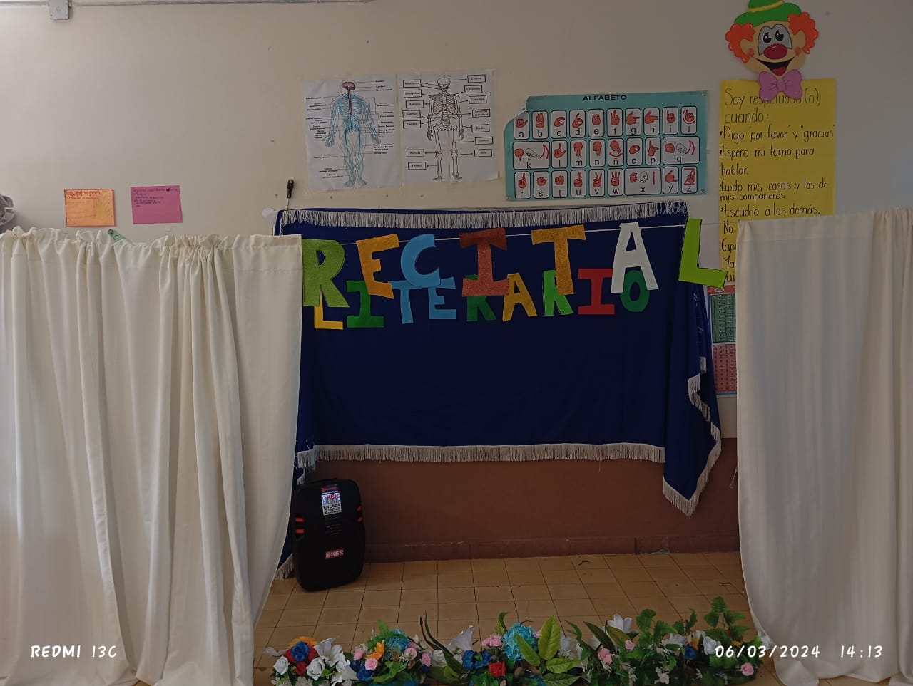

| ¿Que es servicio social?: | El Servicio Social es la actividad profesional a través de cuya práctica, se participa en la sociedad, identificando problemáticas y llevando a su solución. |
|||
|---|---|---|---|---|
| Caracteristicas: | Recibir experencias sobre como son los trabajos laborles | |||
| Requisitos: | Se pide no tener problematicas con los alumnos o personas de esa institucion | |||
| Lugar donde realizas el servicio social: | Lo realizo en la primaria de San Pedro el Alto centro | |||
| Actividades realizadas en el servicio:: | Calificar tareas, ayudar con la limpieza y servicios de mantenimiento | |||
| Director o la persona a cargo: | Geovany Cortez Espinoza director del turno vespertino | |||
| Evidencias del trabajo social: |  | |||
© 2024 Axel Gonzalez Bautista. Todos los derechos reservados.
El contenido de este sitio web está protegido por leyes de derechos de autor internacionales y otras leyes de propiedad intelectual. Queda prohibida la reproducción, distribución, o cualquier otra forma de explotación sin la autorización previa y por escrito del titular de los derechos de autor.
Todas las marcas registradas mencionadas en este sitio web son propiedad de sus respectivos dueños.